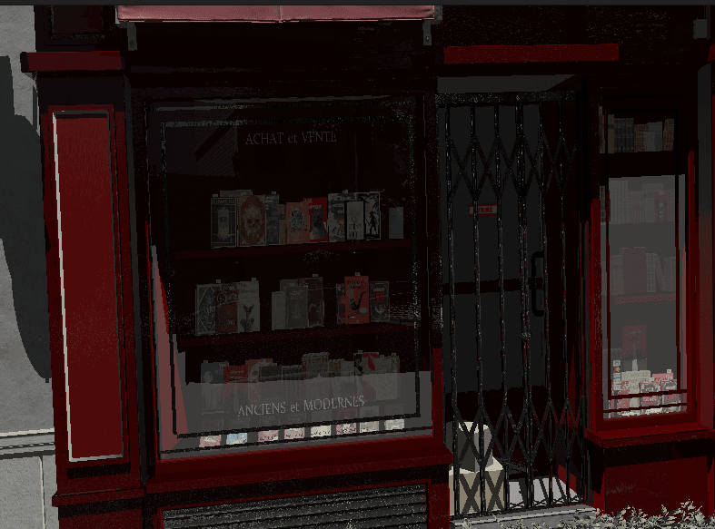

Loading Models: Understanding glTF
Understanding glTF
What is glTF?
glTF (GL Transmission Format) is a standard 3D file format developed by the Khronos Group (the same organization behind OpenGL and Vulkan). It’s often called the "JPEG of 3D" because it aims to be a universal, efficient format for 3D content.
The main purpose of glTF is to bridge the gap between 3D content creation tools (like Blender, Maya, 3ds Max) and real-time rendering applications like games and visualization tools. Before glTF, developers often had to create custom exporters or use intermediate formats that weren’t optimized for real-time rendering.
Key advantages of glTF include:
-
Efficiency: Optimized for loading speed and rendering performance with minimal processing
-
Completeness: Contains geometry, materials, textures, animations, and scene hierarchy in a single format
-
PBR Support: Built-in support for modern physically-based rendering materials
-
Standardization: Widely adopted across the industry, reducing the need for custom exporters
-
Extensibility: Supports extensions for vendor-specific features while maintaining compatibility
glTF File Structure and Data Organization
A glTF file contains several key components organized in a structured way:
-
Scenes and Nodes: The hierarchical structure that organizes objects in a scene graph
-
Meshes: The 3D geometry data (vertices, indices, attributes like normals and UVs)
-
Materials: Surface properties using a physically-based rendering (PBR) model
-
Textures and Images: Visual data for materials, with support for various texture types
-
Animations: Keyframe data for animating nodes (position, rotation, scale)
-
Skins: Data for skeletal animations (joint hierarchies and vertex weights)
-
Cameras: Perspective or orthographic camera definitions
The Buffer System: Efficient Binary Data Storage
One of glTF’s most powerful features is its three-level buffer system:
-
Buffers: Raw binary data blocks (like files on disk)
-
BufferViews: Views into buffers with specific offset and length
-
Accessors: Descriptions of how to interpret data in a bufferView (type, component type, count, etc.)
This system allows different attributes (positions, normals, UVs) to share the same underlying buffer, reducing memory usage and file size. For example:
-
A single buffer might contain all vertex data
-
One bufferView points to the position data within that buffer
-
Another bufferView points to the normal data
-
Accessors describe how to interpret each bufferView (e.g., as vec3 floats)
Using the tinygltf Library for Efficient Parsing
Rather than writing a glTF parser from scratch (which would be a significant undertaking), we’ll use the tinygltf library:
-
It’s a lightweight, header-only C++ library that’s easy to integrate
-
It handles both .gltf and .glb formats transparently
-
It manages the complex task of parsing JSON and binary data
-
It provides a clean API for accessing all glTF components
-
It handles the details of the buffer system, including base64-encoded data
Using tinygltf allows us to focus on the higher-level task of converting the parsed data into our engine’s structures rather than dealing with the low-level details of parsing JSON and binary data.
Implementing a Robust glTF Loader
When implementing a production-ready glTF loader, several considerations come into play:
-
Error Handling: Robust handling of malformed files and graceful failure
-
Format Detection: Supporting both .gltf and .glb formats
-
Memory Management: Efficient allocation and handling of large data
-
Extension Support: Handling optional glTF extensions
Let’s look at how we implement the initial file loading:
void loadModel(const std::string& modelPath) {
// Create a tinygltf loader
tinygltf::Model gltfModel;
tinygltf::TinyGLTF loader;
std::string err, warn;
// Detect file extension to determine which loader to use
bool ret = false;
std::string extension = modelPath.substr(modelPath.find_last_of(".") + 1);
std::transform(extension.begin(), extension.end(), extension.begin(), ::tolower);
if (extension == "glb") {
ret = loader.LoadBinaryFromFile(&gltfModel, &err, &warn, modelPath);
} else if (extension == "gltf") {
ret = loader.LoadASCIIFromFile(&gltfModel, &err, &warn, modelPath);
} else {
err = "Unsupported file extension: " + extension + ". Expected .gltf or .glb";
}
// Handle errors and warnings
if (!warn.empty()) {
std::cout << "glTF warning: " << warn << std::endl;
}
if (!err.empty()) {
std::cout << "glTF error: " << err << std::endl;
}
if (!ret) {
throw std::runtime_error("Failed to load glTF model");
}
// Clear existing model data
model = Model();
// Process the loaded data (covered in the following sections)
}Supporting both .gltf and .glb formats gives artists flexibility in their workflow.
glTF comes in two formats, each with its own advantages:
-
.gltf: A JSON-based format with external binary and image files
-
Human-readable and easier to debug
-
Allows for easier asset management (textures as separate files)
-
Better for development workflows
-
-
.glb: A binary format that combines everything in a single file
-
More compact and efficient for distribution
-
Reduces the number of file operations during loading
-
Better for deployment and distribution
-
Understanding Physically Based Rendering (PBR) Materials
|
This section provides a brief overview of PBR materials as they relate to glTF loading. For a more comprehensive explanation of PBR concepts and lighting models, please refer to the Physically Based Rendering section in the Lighting Materials chapter. |
Materials define how surfaces look when rendered. Modern games and engines use Physically Based Rendering (PBR), which simulates how light interacts with real-world materials based on physical principles.
The Evolution of Material Systems
Material systems in 3D graphics have evolved significantly:
-
Basic Materials (1990s): Simple diffuse colors with optional specular highlights
-
Multi-Texture Materials (2000s): Multiple texture maps combined for different effects
-
Shader-Based Materials (Late 2000s): Custom shader programs for advanced effects
-
Physically Based Rendering (2010s): Materials based on physical properties of real-world surfaces
PBR represents the current state of the art in real-time graphics. It provides more realistic results across different lighting conditions and ensures consistent appearance regardless of the environment.
Key PBR Material Properties
The PBR model in glTF is based on the "metallic-roughness" workflow, which uses these key properties:
-
Base Color: The albedo or diffuse color of the surface (RGB or texture)
-
Metalness: How metal-like the surface is (0.0 = non-metal, 1.0 = metal)
-
Metals have no diffuse reflection but high specular reflection
-
Non-metals (dielectrics) have diffuse reflection and minimal specular reflection
-
-
Roughness: How smooth or rough the surface is (0.0 = mirror-like, 1.0 = rough)
-
Controls the microsurface detail that causes light scattering
-
Affects the sharpness of reflections and specular highlights
-
-
Normal Map: Adds surface detail without extra geometry
-
Perturbs surface normals to create the illusion of additional detail
-
More efficient than adding actual geometry
-
-
Occlusion Map: Approximates self-shadowing within surface crevices
-
Darkens areas that would receive less ambient light
-
Enhances the perception of depth and detail
-
-
Emissive: Makes the surface emit light (RGB or texture)
-
Used for glowing objects like screens, lights, or neon signs
-
Not affected by scene lighting
-
These properties can be specified as constant values or as texture maps for spatial variation across the surface. We’ll go into details about PBR in the next few chapters.

Texture Formats and Compression
In our engine, we use KTX2 with Basis Universal compression for textures. This approach offers several advantages:
-
Reduced File Size: Basis Universal compression significantly reduces texture sizes while maintaining visual quality
-
GPU-Ready Formats: KTX2 textures can be directly transcoded to platform-specific GPU formats
-
Cross-Platform Compatibility: Basis Universal textures work across different platforms and graphics APIs
-
Mipmap Support: KTX2 includes support for mipmaps, improving rendering quality and performance
Embedded Textures in glTF/glb
The glTF format supports two ways to include textures:
-
External References: The .gltf file references external image files
-
Embedded Data: Images are embedded directly in the .glb file as binary data
For our engine, we use the .glb format with embedded KTX2 textures. This approach:
-
Reduces the number of file operations during loading
-
Ensures all textures are always available with the model
-
Simplifies asset management and distribution
The glTF specification supports embedded textures through the bufferView property of image objects. When using KTX2 textures, the mimeType is set to "image/ktx2" to indicate the format.
The texture loading process involves several complex steps that bridge the gap between glTF’s abstract texture references and Vulkan’s low-level GPU resources.
Texture Loading: glTF Texture Iteration and Metadata Extraction
First, we iterate through the glTF model’s texture definitions and extracting the fundamental information needed to locate and identify each texture resource.
// First, load all textures from the model
std::vector<Texture> textures;
for (size_t i = 0; i < gltfModel.textures.size(); i++) {
const auto& texture = gltfModel.textures[i];
const auto& image = gltfModel.images[texture.source];
Texture tex;
tex.name = image.name.empty() ? "texture_" + std::to_string(i) : image.name;The glTF texture system uses an indirection approach where textures reference images, and images contain the actual pixel data or references to it. This separation allows multiple textures to share the same image data but with different sampling parameters (like different filtering or wrapping modes). Our iteration process builds a comprehensive inventory of all texture resources that materials will eventually reference.
The naming strategy provides essential debugging and asset management capabilities. When artists create textures in their 3D applications, meaningful names help developers identify which textures serve which purposes during development. The fallback naming scheme ensures every texture has a unique identifier even when artists haven’t provided descriptive names.
Texture Loading: Format Detection and Buffer Access
Next, we need to figure out whether textures are embedded in the glTF file and identify their format, setting up the foundation for appropriate loading strategies.
// Check if the image is embedded as KTX2
if (image.mimeType == "image/ktx2" && image.bufferView >= 0) {
// Get the buffer view that contains the KTX2 data
const auto& bufferView = gltfModel.bufferViews[image.bufferView];
const auto& buffer = gltfModel.buffers[bufferView.buffer];
// Extract the KTX2 data from the buffer
const uint8_t* ktx2Data = buffer.data.data() + bufferView.byteOffset;
size_t ktx2Size = bufferView.byteLength;The MIME type detection ensures we’re working with KTX2 format specifically, which provides several advantages over traditional image formats like PNG or JPEG. KTX2 is designed specifically for GPU textures and supports advanced features like basis universal compression, multiple mipmap levels, and direct GPU format compatibility. The bufferView check confirms that the image data is embedded within the glTF file rather than referenced externally.
The buffer access pattern demonstrates glTF’s sophisticated data organization system. Rather than copying data unnecessarily, we obtain direct pointers to the KTX2 data within the loaded glTF buffer. This approach minimizes memory usage and avoids expensive copy operations, which is particularly important when dealing with large texture datasets that can easily consume hundreds of megabytes.
Texture Loading: KTX2 Parsing and Validation
Now we need to load the KTX2 texture data using the specialized KTX-Software library and perform initial validation to ensure the texture data is usable.
// Load the KTX2 texture using KTX-Software library
ktxTexture2* ktxTexture = nullptr;
KTX_error_code result = ktxTexture2_CreateFromMemory(
ktx2Data, ktx2Size,
KTX_TEXTURE_CREATE_LOAD_IMAGE_DATA_BIT,
&ktxTexture
);
if (result != KTX_SUCCESS) {
std::cerr << "Failed to load KTX2 texture: " << ktxErrorString(result) << std::endl;
continue;
}The KTX-Software library provides robust parsing of the complex KTX2 format, handling details like multiple mipmap levels, various pixel formats, and metadata that would be extremely complex to implement correctly from scratch. The KTX_TEXTURE_CREATE_LOAD_IMAGE_DATA_BIT flag instructs the library to immediately load the actual pixel data into memory, preparing it for subsequent processing steps.
Error handling at this stage is crucial because texture files can become corrupted during asset pipeline processing or file transfer. By continuing with the next texture when one fails to load, we ensure that a single problematic texture doesn’t prevent the entire model from loading. This graceful degradation approach is essential for robust production systems where content issues shouldn’t crash the application.
Texture Loading: Basis Universal Transcoding
Next, we handle the transcoding process that converts Basis Universal compressed textures into GPU-native formats for optimal runtime performance.
// If the texture uses Basis Universal compression, transcode it to a GPU-friendly format
if (ktxTexture->isCompressed && ktxTexture2_NeedsTranscoding(ktxTexture)) {
// Choose the appropriate format based on GPU capabilities
ktx_transcode_fmt_e transcodeFmt = KTX_TTF_BC7_RGBA;
// For devices that don't support BC7, use alternatives
// if (!deviceSupportsBC7) {
// transcodeFmt = KTX_TTF_ASTC_4x4_RGBA;
// }
// if (!deviceSupportsASTC) {
// transcodeFmt = KTX_TTF_ETC2_RGBA;
// }
// Transcode the texture
result = ktxTexture2_TranscodeBasis(ktxTexture, transcodeFmt, 0);
if (result != KTX_SUCCESS) {
std::cerr << "Failed to transcode KTX2 texture: " << ktxErrorString(result) << std::endl;
ktxTexture2_Destroy(ktxTexture);
continue;
}
}Basis Universal represents a revolutionary approach to texture compression that solves a fundamental problem in cross-platform development: different GPUs support different texture compression formats. Traditional approaches required storing multiple texture versions for different platforms, dramatically increasing storage requirements. Basis Universal stores textures in an intermediate format that can be quickly transcoded to any GPU-native format at load time.
The format selection logic (shown in commented form) demonstrates how production systems handle GPU capability differences. Desktop GPUs typically support BC7 compression which provides excellent quality, while mobile GPUs often use ASTC or ETC2 formats. The transcoding process happens at runtime based on the actual capabilities of the target GPU, ensuring optimal performance and quality on every platform.
The transcoding operation itself is computationally intensive but happens only once during asset loading. The resulting GPU-native format provides significantly better performance during rendering compared to uncompressed textures, making the upfront transcoding cost worthwhile. Failed transcoding attempts trigger cleanup of partially processed resources, preventing memory leaks in error conditions.
Texture Loading: Vulkan Resource Creation and GPU Upload
Finally, create the Vulkan resources needed for GPU rendering and uploads the processed texture data to video memory.
// Create Vulkan image, memory, and view
vk::Format format = static_cast<vk::Format>(ktxTexture2_GetVkFormat(ktxTexture));
vk::Extent3D extent{
static_cast<uint32_t>(ktxTexture->baseWidth),
static_cast<uint32_t>(ktxTexture->baseHeight),
static_cast<uint32_t>(ktxTexture->baseDepth)
};
uint32_t mipLevels = ktxTexture->numLevels;
// Create the Vulkan image
vk::ImageCreateInfo imageCreateInfo{
.imageType = vk::ImageType::e2D,
.format = format,
.extent = extent,
.mipLevels = mipLevels,
.arrayLayers = 1,
.samples = vk::SampleCountFlagBits::e1,
.tiling = vk::ImageTiling::eOptimal,
.usage = vk::ImageUsageFlagBits::eSampled | vk::ImageUsageFlagBits::eTransferDst,
.sharingMode = vk::SharingMode::eExclusive,
.initialLayout = vk::ImageLayout::eUndefined
};
// Create the image, allocate memory, and bind them
// ... (code omitted for brevity)
// Upload the texture data to the image
ktxTexture2_VkUploadEx(ktxTexture, &ktxVulkanTexture, &vkDevice, &vkQueue,
&ktxVulkanDeviceMemory, &ktxVulkanImage,
&ktxVulkanImageView, &ktxVulkanImageLayout,
&ktxVulkanImageMemory);
// Store the Vulkan resources in our texture object
tex.image = ktxVulkanImage;
tex.imageView = ktxVulkanImageView;
tex.memory = ktxVulkanImageMemory;
// Clean up KTX resources
ktxTexture2_Destroy(ktxTexture);
} else {
// Handle other image formats or external references
// ... (code omitted for brevity)
}
// Create a sampler for the texture
VkSamplerCreateInfo samplerInfo = {};
// ... (code omitted for brevity)
textures.push_back(tex);
}
// Now load materials and associate them with textures
for (const auto& material : gltfModel.materials) {
Material mat;
// Base color
if (material.pbrMetallicRoughness.baseColorFactor.size() == 4) {
mat.baseColorFactor.r = material.pbrMetallicRoughness.baseColorFactor[0];
mat.baseColorFactor.g = material.pbrMetallicRoughness.baseColorFactor[1];
mat.baseColorFactor.b = material.pbrMetallicRoughness.baseColorFactor[2];
mat.baseColorFactor.a = material.pbrMetallicRoughness.baseColorFactor[3];
}
// Metallic and roughness factors
mat.metallicFactor = material.pbrMetallicRoughness.metallicFactor;
mat.roughnessFactor = material.pbrMetallicRoughness.roughnessFactor;
// Associate textures with the material
if (material.pbrMetallicRoughness.baseColorTexture.index >= 0) {
const auto& texture = gltfModel.textures[material.pbrMetallicRoughness.baseColorTexture.index];
mat.baseColorTexture = &textures[texture.source];
}
if (material.pbrMetallicRoughness.metallicRoughnessTexture.index >= 0) {
const auto& texture = gltfModel.textures[material.pbrMetallicRoughness.metallicRoughnessTexture.index];
mat.metallicRoughnessTexture = &textures[texture.source];
}
if (material.normalTexture.index >= 0) {
const auto& texture = gltfModel.textures[material.normalTexture.index];
mat.normalTexture = &textures[texture.source];
}
if (material.occlusionTexture.index >= 0) {
const auto& texture = gltfModel.textures[material.occlusionTexture.index];
mat.occlusionTexture = &textures[texture.source];
}
if (material.emissiveTexture.index >= 0) {
const auto& texture = gltfModel.textures[material.emissiveTexture.index];
mat.emissiveTexture = &textures[texture.source];
}
model.materials.push_back(mat);
}Now, let’s talk about how this all fits together.
Understanding Scene Graphs and Hierarchical Transformations
A scene graph is a hierarchical tree-like data structure that organizes the spatial representation of a 3D scene. It’s a fundamental concept in computer graphics and game engines, serving as the backbone for organizing complex scenes.
Why Scene Graphs Matter
Scene graphs offer several critical advantages over flat collections of objects:
-
Hierarchical Transformations: Children inherit transformations from their parents, making it natural to model complex relationships
-
Spatial Organization: Objects are organized based on their logical relationships, making scene management easier
-
Animation Support: Hierarchical structures are crucial for skeletal animations and complex movement patterns
-
Efficient Traversal: Enables optimized rendering, culling, and picking operations
-
Instancing Support: The same object can appear multiple times with different transformations
Consider these practical examples:
-
Character with Equipment: When a character moves, all attached equipment (weapons, armor) should move with it. With a scene graph, you move the character node, and all child nodes automatically inherit the transformation.
-
Vehicle with Moving Parts: A vehicle might have wheels that rotate independently while the whole vehicle moves. A scene graph makes this hierarchy of movements natural to express.
-
Articulated Animations: Characters with skeletons need joints that move relative to their parent joints. A scene graph directly models this parent-child relationship.
Transformations in Scene Graphs
One of the most powerful aspects of scene graphs is how they handle transformations:
-
Each node has a local transformation relative to its parent
-
The global transformation is calculated by combining the node’s local transformation with its parent’s global transformation
-
This allows for intuitive modeling of complex hierarchical movements
The transformation pipeline typically works like this:
-
Each node stores its local transformation (translation, rotation, scale)
-
When rendering, we calculate the global transformation by multiplying with parent transformations
-
This global transformation is used to position the object in world space
Here’s how we build a scene graph from glTF data:
// First pass: create all nodes
for (size_t i = 0; i < gltfModel.nodes.size(); i++) {
const auto& node = gltfModel.nodes[i];
model.linearNodes[i] = new Node();
model.linearNodes[i]->index = static_cast<uint32_t>(i);
model.linearNodes[i]->name = node.name;
// Get transformation data
if (node.translation.size() == 3) {
model.linearNodes[i]->translation = glm::vec3(
node.translation[0], node.translation[1], node.translation[2]
);
}
// ... handle rotation and scale
}
// Second pass: establish parent-child relationships
for (size_t i = 0; i < gltfModel.nodes.size(); i++) {
const auto& node = gltfModel.nodes[i];
for (int childIdx : node.children) {
model.linearNodes[childIdx]->parent = model.linearNodes[i];
model.linearNodes[i]->children.push_back(model.linearNodes[childIdx]);
}
}We use a two-pass approach to ensure all nodes exist before we try to link them together.
Understanding 3D Geometry and Mesh Data
3D models are represented as meshes - collections of vertices, edges, and faces that define the shape of an object. Understanding how this data is structured is crucial for efficient rendering.
The Building Blocks of 3D Models
The fundamental components of 3D geometry are:
-
Vertices: Points in 3D space that define the shape
-
Indices: References to vertices that define how they connect to form triangles
-
Attributes: Additional data associated with vertices:
-
Positions: 3D coordinates (x, y, z)
-
Normals: Direction vectors perpendicular to the surface (for lighting calculations)
-
Texture Coordinates (UVs): 2D coordinates for mapping textures onto the surface
-
Tangents and Bitangents: Vectors used for normal mapping
-
Colors: Per-vertex color data
-
Skinning Weights and Indices: For skeletal animations
-
Modern 3D graphics use triangle meshes because:
-
Triangles are always planar (three points define a plane)
-
Triangles are the simplest polygon that can represent any surface
-
Graphics hardware is optimized for triangle processing
Mesh Organization in glTF
glTF organizes mesh data in a way that’s efficient for both storage and rendering:
-
Meshes: Collections of primitives that form a logical object
-
Primitives: Individual parts of a mesh, each with its own material
-
Attributes: Vertex data like positions, normals, and texture coordinates
-
Indices: References to vertices that define triangles
This organization allows for:
-
Efficient memory use through data sharing
-
Material variation within a single mesh
-
Optimized rendering through batching
Here’s how we extract mesh data:
// Load meshes
for (size_t i = 0; i < gltfModel.nodes.size(); i++) {
const auto& node = gltfModel.nodes[i];
if (node.mesh >= 0) {
const auto& mesh = gltfModel.meshes[node.mesh];
// Process each primitive
for (const auto& primitive : mesh.primitives) {
Mesh newMesh;
// Set material
if (primitive.material >= 0) {
newMesh.materialIndex = primitive.material;
}
// Extract vertex positions, normals, and texture coordinates
// ... (code omitted for brevity)
// Extract indices that define triangles
// ... (code omitted for brevity)
// Assign the mesh to the node
model.linearNodes[i]->mesh = newMesh;
}
}
}Understanding Animation Systems
Animation is what transforms static 3D models into living, breathing entities in our virtual worlds. A robust animation system is essential for creating engaging and dynamic 3D applications.
Animation Techniques in 3D Graphics
Several animation techniques are commonly used in 3D graphics:
-
Keyframe Animation: Defining specific poses at specific times, with interpolation between them
-
Skeletal Animation: Using a hierarchy of bones to deform a mesh
-
Morph Target Animation: Interpolating between predefined mesh shapes
-
Procedural Animation: Generating animation through algorithms and physics
-
Particle Systems: Animating many small elements with simple rules
Modern games typically use a combination of these techniques, with skeletal animation forming the backbone of character movement.
Core Animation Concepts
Several key concepts are fundamental to understanding animation systems:
-
Keyframes: Specific points in time where animation values are explicitly defined
-
Interpolation: Calculating values between keyframes to create smooth motion
-
Channels: Targeting specific properties (like position or rotation) for animation
-
Blending: Combining multiple animations with different weights
-
Retargeting: Applying animations created for one model to another
The glTF Animation System
glTF uses a flexible animation system that can represent various animation techniques:
-
Animations: Collections of channels and samplers
-
Channels: Links between samplers and node properties (translation, rotation, scale)
-
Samplers: Keyframe data with timestamps, values, and interpolation methods
-
Targets: The properties being animated (translation, rotation, scale, or weights for morph targets)
glTF supports three interpolation methods:
-
LINEAR: Smooth transitions with constant velocity
-
STEP: Sudden changes with no interpolation
-
CUBICSPLINE: Smooth curves with control points for acceleration and deceleration
This system allows for complex animations that can target specific parts of a model independently, enabling actions like walking, facial expressions, and complex interactions.
Here’s how we load animation data:
// Load animations
for (const auto& anim : gltfModel.animations) {
Animation animation;
animation.name = anim.name;
// Load keyframe data
for (const auto& sampler : anim.samplers) {
AnimationSampler animSampler{};
// Set interpolation type (LINEAR, STEP, or CUBICSPLINE)
// ... (code omitted for brevity)
// Extract keyframe times and values
// ... (code omitted for brevity)
animation.samplers.push_back(animSampler);
}
// Connect samplers to node properties
for (const auto& channel : anim.channels) {
AnimationChannel animChannel{};
// Set target node and property (translation, rotation, or scale)
// ... (code omitted for brevity)
animation.channels.push_back(animChannel);
}
model.animations.push_back(animation);
}Integration with the Rendering Pipeline
Now that we’ve loaded our model data, let’s discuss how it integrates with the rest of our rendering pipeline.
From Asset Loading to Rendering
The journey from a glTF file to pixels on the screen involves several stages:
-
Asset Loading: The glTF loader populates our Model, Node, Mesh, and Material structures
-
Scene Management: The engine maintains a collection of loaded models in the scene
-
Update Loop: Each frame, animations are updated based on elapsed time
-
Culling: The engine determines which objects are potentially visible
-
Rendering: The scene graph is traversed, and each visible mesh is rendered with its material
This pipeline allows for efficient rendering of complex scenes with animated models.
Rendering Optimizations
Several optimizations can improve the performance of model rendering:
-
Batching: Group similar objects to reduce draw calls
-
Instancing: Render multiple instances of the same mesh with different transforms
-
Level of Detail (LOD): Use simpler versions of models at greater distances
-
Frustum Culling: Skip rendering objects outside the camera’s view
-
Occlusion Culling: Skip rendering objects hidden behind other objects
Memory Management Considerations
When loading models, especially large ones, memory management becomes crucial:
-
Vertex Data: Store in GPU buffers for efficient rendering
-
Indices: Use 16-bit indices when possible to save memory
-
Textures: Use KTX2 with Basis Universal compression to significantly reduce memory usage
-
Instancing: Reuse the same model data for multiple instances with different transforms
Efficient Texture Memory Management with KTX2 and Basis Universal
Textures often consume the majority of GPU memory in 3D applications. KTX2 with Basis Universal compression provides several memory optimization benefits:
-
Supercompression: Basis Universal can reduce texture size by 4-10x compared to uncompressed formats
-
GPU-Native Formats: Textures are transcoded to formats that GPUs can directly sample from, avoiding runtime decompression
-
Mipmaps: KTX2 supports mipmaps, which not only improve visual quality but also reduce memory usage for distant objects
-
Format Selection: The transcoder can choose the optimal format based on the target GPU’s capabilities:
-
BC7 for desktop GPUs (NVIDIA, AMD, Intel)
-
ASTC for mobile GPUs (ARM, Qualcomm)
-
ETC2 for older mobile GPUs
-
Integration with Vulkan Rendering Pipeline
To efficiently integrate KTX2 textures with Vulkan:
-
Descriptor Sets: Create descriptor sets that bind texture image views and samplers to shader binding points
-
Pipeline Layout: Define a pipeline layout that includes these descriptor sets
-
Shader Access: In shaders, access textures using the appropriate binding points
Here’s a simplified example of setting up descriptor sets for PBR textures:
// Create descriptor set layout for PBR textures
std::array<vk::DescriptorSetLayoutBinding, 5> bindings{
// Base color texture
vk::DescriptorSetLayoutBinding{
.binding = 0,
.descriptorType = vk::DescriptorType::eCombinedImageSampler,
.descriptorCount = 1,
.stageFlags = vk::ShaderStageFlagBits::eFragment
},
// Metallic-roughness texture
vk::DescriptorSetLayoutBinding{
.binding = 1,
.descriptorType = vk::DescriptorType::eCombinedImageSampler,
.descriptorCount = 1,
.stageFlags = vk::ShaderStageFlagBits::eFragment
},
// Normal map
vk::DescriptorSetLayoutBinding{
.binding = 2,
.descriptorType = vk::DescriptorType::eCombinedImageSampler,
.descriptorCount = 1,
.stageFlags = vk::ShaderStageFlagBits::eFragment
},
// Occlusion map
vk::DescriptorSetLayoutBinding{
.binding = 3,
.descriptorType = vk::DescriptorType::eCombinedImageSampler,
.descriptorCount = 1,
.stageFlags = vk::ShaderStageFlagBits::eFragment
},
// Emissive map
vk::DescriptorSetLayoutBinding{
.binding = 4,
.descriptorType = vk::DescriptorType::eCombinedImageSampler,
.descriptorCount = 1,
.stageFlags = vk::ShaderStageFlagBits::eFragment
}
};
vk::DescriptorSetLayoutCreateInfo layoutInfo{
.bindingCount = static_cast<uint32_t>(bindings.size()),
.pBindings = bindings.data()
};
vk::raii::DescriptorSetLayout descriptorSetLayout(device, layoutInfo);
// For each material, create a descriptor set and update it with the material's textures
for (const auto& material : model.materials) {
// Allocate descriptor set from the descriptor pool
vk::DescriptorSetAllocateInfo allocInfo{
.descriptorPool = descriptorPool,
.descriptorSetCount = 1,
.pSetLayouts = &*descriptorSetLayout
};
vk::raii::DescriptorSet descriptorSet = std::move(vk::raii::DescriptorSets(device, allocInfo).front());
// Update descriptor set with texture image views and samplers
std::vector<vk::WriteDescriptorSet> descriptorWrites;
if (material.baseColorTexture) {
vk::DescriptorImageInfo imageInfo{
.sampler = material.baseColorTexture->sampler,
.imageView = material.baseColorTexture->imageView,
.imageLayout = vk::ImageLayout::eShaderReadOnlyOptimal
};
vk::WriteDescriptorSet write{
.dstSet = *descriptorSet,
.dstBinding = 0,
.dstArrayElement = 0,
.descriptorCount = 1,
.descriptorType = vk::DescriptorType::eCombinedImageSampler,
.pImageInfo = &imageInfo
};
descriptorWrites.push_back(write);
}
// Similar writes for other textures
// ...
device.updateDescriptorSets(descriptorWrites, {});
// Store the descriptor set with the material for later use during rendering
material.descriptorSet = *descriptorSet;
}Best Practices for Texture Memory Management
To optimize texture memory usage:
-
Texture Atlasing: Combine multiple small textures into a single larger texture to reduce state changes
-
Mipmap Management: Generate and use mipmaps for all textures to improve performance and quality
-
Texture Streaming: For very large scenes, implement texture streaming to load higher resolution textures only when needed
-
Memory Budgeting: Implement a texture budget system that can reduce texture quality when memory is constrained
-
Format Selection: Choose the appropriate format based on the texture content:
-
BC7/ASTC for color textures with alpha
-
BC1/ETC1 for color textures without alpha
-
BC5/ETC2 for normal maps
-
BC4/EAC for single-channel textures (roughness, metallic, etc.)
-
Summary and Next Steps
In this chapter, we’ve explored the process of loading 3D models from glTF files and organizing them into a scene graph. We’ve covered:
-
The structure and advantages of the glTF format
-
How to use the tinygltf library for efficient parsing
-
The physically-based material system used in modern rendering
-
How scene graphs organize objects in a hierarchical structure
-
The representation of 3D geometry in meshes
-
Animation systems for bringing models to life
-
Integration with the rendering pipeline
Our glTF loader creates a complete scene graph with:
-
Nodes organized in a hierarchy
-
Meshes attached to nodes
-
Materials defining surface properties
-
Animations that can change node properties over time
This structure allows us to:
-
Render complex 3D scenes
-
Animate characters and objects
-
Apply transformations that propagate through the hierarchy
-
Optimize rendering for performance
In the next chapter, we’ll explore how to render these models using physically-based rendering techniques, bringing our loaded assets to life with realistic lighting and materials.